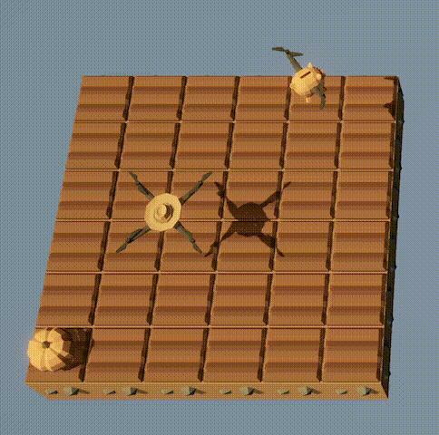
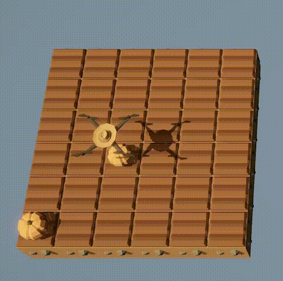

HW 4
ENGR 21, Fall 2026.
| Due Date | Thu, Oct 01 |
| Turn in link | Gradescope code and PDF |
| URL | emadmasroor.github.io/E21-F26/Homework/HW4 |
What to turn in
For this assignment, you will turn in a PDF file as well as multiple code files. Each entry in the following table should be its own .py file.
| Problem | Format |
|---|---|
| 1 | Code: One .py file with all three function definitions. |
| 2 | |
| 3 | |
| 4 | Code: Three .py file, one for each of 4.1, 4.2 and 4.3 |
1 Python function to read IEEE floats
Computers store numbers in memory using a series of zeros and ones. These zeros and ones are then interpreted as floating-point numbers according to the standard scheme that we learned about in class.
In this question, you will write a Python function that can interpret a string of zeros and ones as a decimal number using the IEEE standard. Your function should work for 16-bit, 32-bit and 64-bit numbers.
Name your function readIEEEfloat. It should take a single argument in the form of a string and should return the value as a number.
You can access a subset of a list in Python using the square bracket [] notation.
>>> list1 = [56,78,34,-21,3,90,67,24]
>>> list1[2:5]
[34, -21, 3]
>>> list1[-1]
24
>>> list1[-2]
67In writing your function, you may wish to make use of the following functions as building blocks.
def bin_to_dec_int(num):
# Converts binary integer to decimal integer
# num is a string, interpreted as a binary integer.
s = len(num)
total_value = 0
for index in range(s):
power = s-index-1
digit = int(num[index])
value = (2 ** power) * digit
total_value += value
return total_valuedef bin_to_dec_frac(num):
# Converts binary fraction to decimal fraction.
# num is a string of 0's and 1's.
# If num = 1010, this function interprets it as
# 1 * (1/2)^1 + 0 * (1/2)^2 + 1 * (1/2)^3 + 0 * (1/2)^4.
# The first bit multiplies (1/2). The second bit multiplies (1/4). The third bit multiplies (1/8), and so on.
# for example, in the IEEE format, a 16-bit number could have the significand
# 1.0011010101
# This function can be used to read the string of bits AFTER the "decimal point" and
# returns the value of the resulting fraction in decimal form as a 'float'.
# The returned value must always be less than 1.
s = len(num)
total_value = 0
for index in range(s):
power = -index - 1
digit = int(num[index])
value = (2 ** power) * digit
total_value += value
return total_value2 Floating-point numbers
2.1 Conversion to fractional form
Show all your work for full credit
Interpret the following 16-bit floating-point numbers as irreducable fractions. Also write an approximate decimal representation of your fractions.
0b1001110000101110, a.k.a.0x1C2E0b0100110001101010, a.k.a.0x4C6A
2.2 Large and small Numbers
Use the web app Float Toy to fill the following table. All numbers should be positive, and should be given in scientific notation in decimal form up to the number of significant figures given by the web app or up to 3 significant figures after the decimal point, whichever is smaller.
| Number | 16-bit | 32-bit | 64-bit |
|---|---|---|---|
| Smallest subnormal non-zero number | |||
| Second smallest subnormal non-zero number | |||
| Smallest normal\(^*\) non-zero number | |||
| Second smallest normal\(^*\) non-zero number | |||
Largest non-NaN number |
|||
Second largest non-NaN number |
\(^*\) i.e., not subnormal.
3 Gap Size in floating point numbers
3.1 Gaps between 16-bit floating-point binary numbers
We would like to tabulate the ‘gap size’, which can also be called the increment size, between floating-point numbers. Two of the values in this table have been filled from the relevant sections of Lecture 8 here and here.
| Between | and | the gap is | or equivalently |
|---|---|---|---|
| \(2^{-14}\) | \(2^{-13}\) | … | |
| \(2^{-13}\) | \(2^{-12}\) | … | |
| \(2^{-12}\) | \(2^{-11}\) | … | |
| \(2^{-11}\) | \(2^{-10}\) | … | |
| \(2^{-10}\) | \(2^{-9}\) | … | |
| \(2^{-9}\) | \(2^{-8}\) | … | |
| \(2^{-8}\) | \(2^{-7}\) | … | |
| \(2^{-7}\) | \(2^{-6}\) | … | |
| \(2^{-6}\) | \(2^{-5}\) | … | |
| \(2^{-5}\) | \(2^{-4}\) | … | |
| \(2^{-4}\) | \(2^{-3}\) | … | |
| \(2^{-3}\) | \(2^{-2}\) | … | |
| \(2^{-2}\) | \(2^{-1}\) | … | |
| \(2^{-1}\) | \(2^{0}\) | … | |
| \(2^{0}\) | \(2^{1}\) | … | |
| \(2^{1}\) | \(2^{2}\) | … | |
| \(2^{2}\) | \(2^{3}\) | … | |
| \(2^{3}\) | \(2^{4}\) | \(2^{-7}\) | \(7.812 \times 10^{-3}\) |
| \(2^{4}\) | \(2^{5}\) | … | |
| \(2^{5}\) | \(2^{6}\) | … | |
| \(2^{6}\) | \(2^{7}\) | … | |
| \(2^{7}\) | \(2^{8}\) | … | |
| \(2^{8}\) | \(2^{9}\) | … | |
| \(2^{9}\) | \(2^{10}\) | … | |
| \(2^{10}\) | \(2^{11}\) | … | |
| \(2^{11}\) | \(2^{12}\) | \(2^{1}\) | \(2\) |
| \(2^{12}\) | \(2^{13}\) | … | |
| \(2^{13}\) | \(2^{14}\) | … | |
| \(2^{14}\) | \(2^{15}\) | … | |
| \(2^{15}\) | \(2^{16}\) | … |
For the final column, use up to 3 places after the decimal point. If a number requires more precision than this, truncate the remaining figures (don’t round).
3.2 Precision for floats
The \(\pm\) symbol is often used to indicate the precision of a known quantity. For floating point numbers, it is appropriate to use \(x \pm y\) to represent a number, where \(y\) is half of the gap size in that part of the number line.
For example, we saw in lecture 8 that between 8 and 16, 16-bit floating point numbers have a gap size of \(1/128\) or \(0.0078125\). Half of this number is \(0.00390625\). If we now consider the 16-bit floating point number given by 0100100000001100, its value can be found to be equal to \(259/32 = 8.09375\). However, it would not be correct to write this number in decimal form with 5 significant figures after the decimal point. To see why, let us write it in \(\pm\) notation as follows.
\[8.09375 \pm 0.00390625\]
Thus, the 16-bit float 0100100000001100 would be used by a computer to represent any number in the range from \(8.09375-0.00390625\) to \(8.09375+0.00390625\) shown above. For example,
8.096728.095858.091758.09079
are all within the range shown above. These numbers agree in the first two digits after the decimal point, but in subsequent places, they disagree. Therefore, when representing the floating-point number 0100100000001100 in decimal form, it would not be appropriate to write more significant figures after the second one after the decimal point. Thus, the correct way to express it in decimal form would be \(\boxed{8.09}\), not \(8.09375\).
Using the discussion above as a template, write the following floating-point numbers in fractional form and then in decimal form using the appropriate number of significant figures after the decimal point.
- The 16-bit float given by
0b0001110000010000
- The 16-bit float given by
0x3C10
4 The Farmer Was Replaced
Download the save file here to complete this part of the homework.
4.1 Zero location
Write a function called zeroloc() that takes the drone back to the bottom-left corner.
4.2 Random plants
Write a script that plants a random plant (out of five options: Grass, Tree, Bush, Carrot, and Pumpkin) on each spot of the 6x6 farm. It should only do this once, without repeating.
Your script should import your zeroloc function from a different file, i.e., the first line of your script should be something like from <file name> import zeroloc.
The second line of your script should call the zeroloc function.
- You may wish to make use of the
random()function, which has been unlocked for you. - In the game, dividing a given number (say,
4.2) by 1 like this:4.2 // 1returns the largest integer less than the given number. - It is recommended that you till the entire farm for this task. All five crops can be planted on tilled soil.
- Dictionaries and/or Lists should come in handy here.
4.3 Waiting for crops to grow
Write a function called plant_and_wait that takes as argument a plant ‘object’, such as Entities.Carrot.
When this function is called with argument Entities.Tree, its behavior should be as shown in the gif below, i.e., it should plant a tree and do flips until the tree has fully grown, and then harvest it.

When this function is used to plant pumpkins, its behavior needs to be different. It should wait to check if the pumpkin grows up to be rotten, and if so, it should start over. As an illustration of this behavior, the following gif shows what your drone should do if you run the following code:
while True:
plant_and_wait(Entites.Pumpkin)
This function should not move the drone. It should till the soil if it is grassland (remember that tilling grass turns it into soil, but tilling soil turns it back into grass!)